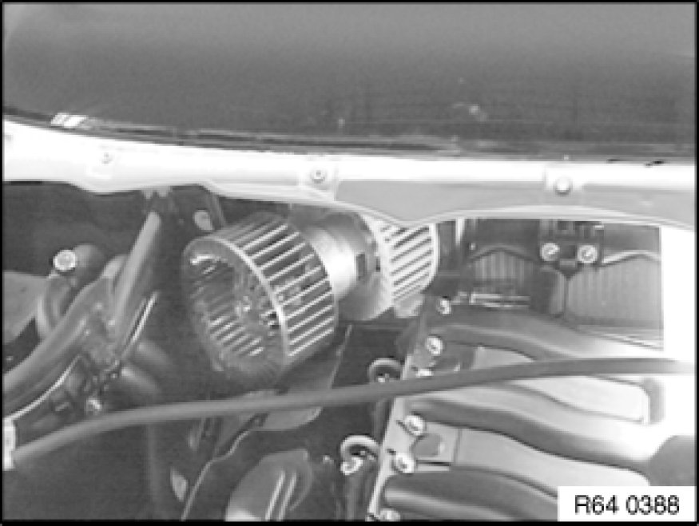

Blower Motor: Service and Repair
64 11 213 - Removing and installing/replacing heater - A/C unit fan

Special tools required:
- 51 3 057

Necessary preliminary tasks:
E46 and E83:
Remove heater bulkhead 51 71 080 Removing and Installing/Replacing Heater Bulkhead.
E46 M43TU only:
Remove cylinder head.
E46 M47, M47TU only:
Remove complete wiper console Removing and Installing Complete Wiper Console.
Remove air cleaner element.
E46 M52TU, M54 only:
Remove engine cover.
E46 M57 only:
Remove intake air manifold.
E46 N42 only:
Remove cylinder head.
Necessary preliminary tasks:
E46 S54 only:
Remove intake air manifold.
Detach hose (1) in direction of arrow from fitting (2).
Remove cover strip (3) in direction of arrow from guide (4).

Pull lock (1) in direction of arrow and feed out flap (2).
Unclip retainers (1).
Unscrew bolt (2).
Feed out fan cover (3).
Release screws (1).
Pull out fan cover (2).
Installation:
Make sure fan cover (2) is correctly seated.
Unfasten plug connection and disconnect.
Release retainer with special tool 51 3 057.
Installation:
Bridge (1) must snap into place in opening (2) of fan motor.

Remove fan for heater - A/C unit towards front.
Installation:
Make sure fan for heater - A/C unit is correctly seated.